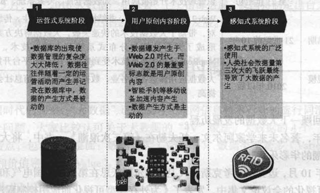
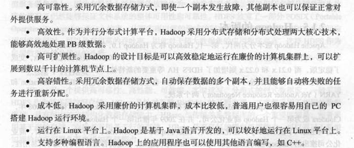
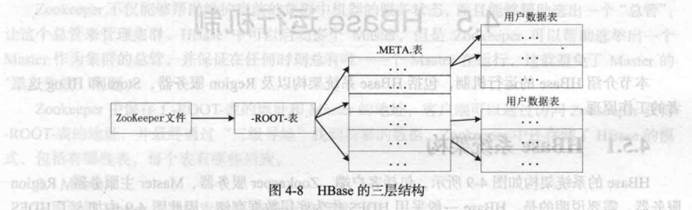
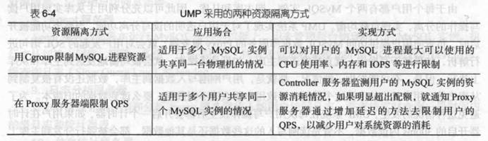

数据量大
数据类型繁多
处理速度快
价值密度低
1.全样而非抽样
2.效率而非精确
3.相关而非因果
第一，大数据、云计算和物联网的区别。大数据侧重于对海量数据的存储、处理与分析,从海量数据中发现价值,服务于生产和生活;云计算本质上旨在整合和优化各种IT资源,并通过网络以服务的方式廉价地提供给用户;物联网的发展目标是实现物物相连,应用创新是物联网发展的核心。
第二，大数据、云计算和物联网的联系。从整体上看，大数据、云计算和物联网这三者是相辅相成的。大数据根植于云计算，大数据分析的很多技术都来自于云计算，云计算的分布式数据存储和管理系统(包括分布式文件系统和分布式数据库系统)提供了海量数据的存储和管理能力,分布式并行处理框架 MapReduce提供了海量数据分析能力，没有这些云计算技术作为支撑，大数据分析就无从谈起。反之，大数据为云计算提供了“用武之地”，没有大数据这个“练兵场”，云计算技术再先进，也不能发挥它的应用价值。物联网的传感器源源不断产生的大量数据,构成了大数据的重要数据来源,没有物联网的飞速发展，就不会带来数据产生方式的变革，即由人工产生阶段转向自动产生阶段，大数据时代也不会这么快就到来。同时,物联网需要借助于云计算和大数据技术，实现物联网大数据的存储、分析和处理。
Hadoo基于Java语言开发。核心是分布式文件系统(Hadoop Distributed File System,HDFS)和
MapReduce。
HDFS是针对谷歌文件系统(Google File
System，GFS）的开源实现。MapReduce是针对谷歌 MapReduce的开源实现，

①.相同点：
运行机器数相同，单机(非分布式)模式与伪分布式都是在一台单机上运行。
②. 不同点
1.运行模式不同：
单机模式是Hadoop的默认模式。这种模式在一台单机上运行，没有分布式文件系统，而是直接读写本地操作系统的文件系统。
伪分布模式这种模式也是在一台单机上运行，但用不同的Java进程模仿分布式运行中的各类结点。
2、配置不同：
单机模式（standalone）首次解压Hadoop的源码包时，Hadoop无法了解硬件安装环境，便保守地选择了最小配置。在这种默认模式下所有3个XML文件均为空。当配置文件为空时，Hadoop会完全运行在本地。
伪分布模式在“单节点集群”上运行Hadoop，其中所有的守护进程都运行在同一台机器上。
3、节点交互不同：
单机模式因为不需要与其他节点交互，单机模式就不使用HDFS，也不加载任何Hadoop的守护进程。该模式主要用于开发调试MapReduce程序的应用逻辑。
伪分布模式在单机模式之上增加了代码调试功能，允许你检查内存使用情况，HDFS输入输出，以及其他的守护进程交互。
分布式文件系统的块要比操作系统中的块大很多。比如,HDFS默认的一个块的大小是64MB。
与普通文件不同的是,在分布式文件系统中，如果一个文件小于一个数据块的大小，它并不占用整个数据块的存储空间。
主节点负责文件和目录的创建删除重命名，同时管理着从节点和文件块的映射关系，因此客户端只有访问名称节点才能找到请求的文件块所在的位置，进而到相应位置读取所需的文件块。
从节点负责数据的存储和读取，存储时由主节点分配存储位置，然后由客户端把数据直接写入到相应的从节点；在读取时客户端从主节点中获得从节点和文件块的映射关系，然后就可以到相应位置访问文件块。
首先HDFS采用了主从架构模型，一个HDFS集群包括一个名称节点和若干个数据节点。
其实是第二名称节点，为了有效的解决EditLog逐渐变大带来的问题，HDFS设计时采用了第二名称节点，其可以完成EditLog和FsImage的合并操作，减小EditLog文件大小，缩短名称节点的重启时间。其次可以作为名称节点的检查点，来保存名称节点的元数据信息。
HDFS采用多副本的方法对数据进行冗余存储，通常一个数据块的多个副本会被分布到不同的数据节点上。
HDFS的错误可以分为3种情况：名称节点出错，数据节点出错以及数据出错。
① 名称节点出错：名称节点发生宕机(或者是FsImage和EditLog发生损坏)。首先到远程挂载的网络文件系统种获取备份的元数据信息，放到第二名称节点上进行恢复，并把第二名称节点作为名称节点来使用。
② 数据节点出错：数据节点发生故障或者断网，从而导致数据节点无法定期向名称节点发送心跳。名称节点会定期检查数据节点的心跳，通过数据冗余复制来生产新的副本。
③ 数据出错：如何探测：文件被创建时，客户端会对每一个文件块进行信息摘录，并把这些信息写入同一个路径的隐藏文件里。当客户端读取文件时，会先读取该信息文件，然后利用该信息文件对每个读取的数据块进行校验。如何恢复-- 当校验出错时，客户端会请求到另外一个数据节点读取该文件块，并向名称节点报告这个文件块有误。
①数据类型：关系数据库采用关系模型，HBase采用数据模型。数据模型就是把数据存储为未经解释的字符串，用户可以将不同格式的结构化数据和非结构化数据都序列化成字符串保存在HBase中，然后通过自己的程序把字符串解析成不同的数据类型；
② 数据操作：关系数据库中会涉及复杂的多表连接，HBase中通常只采用单表的主键查询；
③ 存储模式：关系数据库基于行存储，HBase基于列存储。
①每个HBase表都由若干行组成，每个行由行键(Row Key)来标识。在 HBase内部，行键是字节数组。存储时,数据按照行键的字典序排序存储。
② 列族需要在创建表的时候就定义好，数量也不宜过多。列族名必须由可打印字符组成，创建表的时候不需要定义好列。
③每个单元格都保存着同一份数据的多个版本，这些版本采用时间戳进行索引。使用不同的时间戳来区分不同的更新版本。
库函数：链接到每个客户端；
一个
Master 主服务器：主服务器 Master 主要负责表和 Region 的管理工作；
许多个 Region 服务器：Region 服务器是 HBase 中最核心的模块，负责维护分配给自己的 Region，并响应用户的读写请求
①第一层 Zookeeper 文件，记录了 - ROOT - 表的位置信息；
② 第二层 -ROOT - 表，记录了. META. 表的 Region 位置信息，-ROOT - 表只能有一个 Region。通过 - ROOT - 表，就可以访问. META. 表中的数据；
③ 第三层： .META. 表，记录了用户数据表的 Region 位置信息，.META. 表可以有多个 Region，保存了 HBase 中所有用户数据表的 Region 位置信息；
（1）客户端
客户端包含访问 HBase 的接口，同时在缓存中维护着已经访问过的 Region 位置信息，用来加快后续数据访问过程
（2）Zookeeper 服务器
Zookeeper 可以帮助选举出一个
Master 作为集群的总管，并保证在任何时刻总有唯一一个 Master 在运行，这就避免了 Master 的 “单点失效” 问题
（3）Master
主服务器 Master 主要负责表和 Region 的管理工作：管理用户对表的增加、删除、修改、查询等操作；实现不同 Region 服务器之间的负载均衡；在 Region 分裂或合并后，负责重新调整 Region 的分布；对发生故障失效的 Region 服务器上的 Region 进行迁移
（4）Region 服务器
Region 服务器是 HBase 中最核心的模块，负责维护分配给自己的 Region，并响应用户的读写请求；
Region 服务器内部管理了一系列 Region 对象和一个 HLog 文件，其中，HLog 是磁盘上面的记录文件，它记录着所有的更新操作。每个 Region 对象又是由多个 Store 组成的，每个 Store 对应了表中的一个列族的存储。每个 Store 又包含了 MemStore 和若干个 StoreFile，其中，MemStore 是在内存中的缓存，保存最近更新的数据。StoreFile是磁盘中的文件，这些文件都是树结构，方便读取。
用户读写数据的过程：当用户写入数据时，会被分配到相应的Region服务器去执行操作，用户数据首先被写入到MemStore和HLog中，当操作写入HLog之后，commit()调用才会将其返回给客户端。当用户读取数据时，Region服务器会首先访问MemStore缓存，如果数据不在缓存中，才会到磁盘上面的StoreFile中去寻找。
① 键值数据库会使用一个哈希表来存储，只能通过key进行查询，从而找到对应的value，缺点是不容易进行条件查询；
② 列族数据库采用列族数据模型，同一列的数据会存放在一起；
③ 文档数据库以文档作为数据库的最小单位；
④ 图数据库使用图作为数据模型来存储数据；
C（Consistency）：一致性，所有节点在同一时间具有相同的数据。
A:（Availability）：可用性，是指快速获取数据，可以在确定的时间内返回操作结果，保证每个请求不管成功或者失败都有响应；
P（Tolerance of Network Partition）：分区容忍性，是指当出现网络分区的情况时（即系统中的一部分节点无法和其他节点进行通信），分离的系统也能够正常运行，也就是说，系统中任意信息的丢失或失败不会影响系统的继续运作。
① 原子性（Atomicity)
指事务必须是原子工作单元，对于其数据修改，要么全都执行，要么全都不执行。
② 一致性（consistency）
指事务在完成时，必须使所有的数据都保持一致状态。
③ 隔离性（Isolation)
指并发事务所做的修改必须与其他并发事务所做的修改隔离。
④ 持久性（Durability)
指事务完成之后，它对于系统的影响是永久性的，该修改即使出现致命的系统故障也将一直保持。
基本可用( Basically
Availble)：指一个分布式系统的一部分发生问题变得不可用时,其他部分仍然可以正常使用,也就是允许分区失败的情形出现。
软状态( Soft-state ) ：软状态是与硬状态相对应的一种提法。数据库保存的数据是“硬状态”
时，可以保证数据一致性，即保证数据一直是正确的。“软状态”是指状态可以有一段时间不同步，具有一定的滞后性。
最终一致性(Eventualconsistency
)：最终一致性是弱一致性的一种特例,允许后续的访问操作可以暂时读不到更新后的数据，但是经过一段时间之后,必须最终读到更新后的数据，不是每时每刻都保持实时一致。
1、动态可扩展2.高可用性3.较低的使用代价4.易用性5.高性能6.免维护7.安全

(1
)SSL数据库连接。SSL是为网络通信提供安全及数据完整性的一种安全协议，它在传输层对网络连接进行加密。Proxy服务器实现了完整的 MySQL客户端/服务器协议，可以与客户端之间建立SSL数据库连接。
(2)数据访问IP白名单。可以把允许访问云数据库的IP地址放入“白名单”,只有白名单内的IP地址才能访问，其他IP地址的访问都会被拒绝,从而进一步保证账户安全。
(3)记录用户操作日志。用户的所有操作记录都会被记录到日志分析服务器，通过检查用户操作记录,可以发现隐藏的安全漏洞。
(4
)SQL 拦截。Proxy
服务器可以根据要求拦截多种类型的SQL语句，比如全表扫描语句“select*”
Hadoop是基于MapReduce模型的分布式计算平台。
MapReduce是Hadoop的核心组件之一。
MapReduce
框架采用了
Master/Slave 架构，包括一个 Master 和若干个 Slave
Master
上运行
JobTracker,Slave 上运行 TaskTrackero 。用户提交的每个计算作业，会被划分成若干个任务。
JobTracker 负责作业和任务的调度，监控它们的执行，并重新调度已经失败的任务。
TaskTracker 负责执行由 JobTracker 指派的任务。
① 逻辑切分：首先MapReduce框架会使用InputFormat模块做Map前的预处理，比如验证输入的格式是否符合输入的定义；然后，将输入文件切分为逻辑上的多个InputSplit，InputSplit是MapReduce对文件进行处理和运算的输入单位；(每个InputSplit并没有对文件进行实际切割，只是记录了要处理的数据的位置和长度)；
② 转化为Key-value：通过RecordReader(RR)根据InputSplit中的信息来处理InputSplit中的具体记录，加载数据并转换为适合Map任务读取的键值对，输入给Map任务；
③ Map处理：Map任务会根据用户自定义的映射规则，输出一系列的<key,value>作为中间结果；
④ Shuffle：为了让Reduce可以并行处理Map的结果，需要对Map的输出进行一定的分区、排序、合并、归并等操作，得到<key,value-list>形式的中间结果，再交给对应的Reduce进行处理。Shuffle将无序的<key,value>转化为有序的<key,value-list>；
⑤ Reduce：Reduce 以一系列<key,value-list>中间结果作为输入，执行用户定义的逻辑，输出结果给OutputFormat模块；
⑥ 输出模块：OutputFormat模块验证输出目录是否已经存在且输出结果类型是否符合配置文件中的配置类型，如果都满足，就输出Reduce的结果到分布式文件系统。
对于每个分区内的所有键值对，后台线程会根据 key 对它们进行内存排序 (Sort), 排序是 MapReduce 的默认操作。排序结束后，还包含一个可选的合并(Combine ) 操作。如果用户事先没有定义 Combiner 函数，就不用进行合并操作。如果用户事先定义了 Combiner 函数，则这个时候会执行合并操作，从而减少需要溢写到磁盘的数据量。所谓 “合并”，是指将那些具有相同 key 的 < key,value > 的 value 加起来，比如，有两个键值对 <*xmu",1 > 和
<*xmu",1>, 经过合并操作以后就可以得到一个键值对
<*xmu",2>, 减少了键值对的数量。不过，并非所有场合都可以使用
Combiner, 因为，Combiner 的输出是
Reduce 任务的输人，Combiner 绝不能改变
Reduce 任务最终的计算结果，一般而言，累加、最大值等场景可以使用合并操作。
1. 单点故障问题：虽然HDFS1.0中存在第二名称节点，但是在1.0版本中第二名称节点的作用是周期性的从名称节点获取命名空间镜像文件(FsImage)和修改日志(EditLog)，从而来对FsImage的恢复。因此当名称节点发生故障时，系统无法实时切换到第二名称节点以对外提供服务，仍需要停机恢复。（可以通过HA来解决）
2. 可扩展性方面，名称节点把整个 HDFS
文件系统中的元数据信息都保存在自己的内存中，HDFS1.0 中只有一个名称节点，不可以水平扩展，而单个名称节点的内存空间是由上限的，这限制了系统中数据块、文件和目录的数目。在系统整体性能方面，整个 HDFS 文件系统的性能会受限于单个名称节点的吞吐量。在隔离性方面，单个名称节点难以提供不同程序之间的隔离性，一个程序可能会影响会影响其他运行的程序。（通过HDFS联邦来进行解决）
在 HDFS HA中，所有名称节点会共享底层的数据节点存储资源。每个数据节点要向集群中所有的名称节点注册，并周期性地向名称节点发送
“心跳” 和块信息，报告自己的状态，同时也会处理来自名称节点的指令。
因为原来的HDFS存在可扩展性，系统性能及隔离性三个方面的问题。联邦设计了多个相互独立的名称节点，使得HDFS的命名服务能够水平扩展。
（1）存在单点故障：系统中只有一个JobTracker来负责所有MapReduce作业的调度；
（2）JobTracker负责的任务过重：JobTracker不仅要负责作业的调度和失败恢复，同时要负责资源管理与分配；
（3）容易出现内存溢出：TaskTracker资源分配时不考虑内存的实际情况；
（4）资源划分不合理：资源槽之间彼此不能共通使用；
① Pig 是 Hadoop 生态系统的一个组件，允许用户通过编写简单的脚本来实现复杂的数据分析，而不需要编写复杂的 MapReduce 应用程序，Pig 会自动把用户编写的脚本转换成 MapReduce 作业在 Hadoop 集群上运行，而且具备对生成的 MapReduce 程序进行自动优化的功能；
② Tez 直接源于 MapReduce 框架，核心思想是将 Map 和 Reduce 两个操作进一步进行拆分，即 Map 被拆分成 Input、Processor、Sort、Merge 和 Output，Reduce
被拆分成 Input、Shuffle、Sort、Merge、Processor
和 Output 等，经过分解后的这些元操作可以进行自由任意组合产生新的操作，经过一些控制程序组装后就可形成一个大的 DAG 作业。通过 DAG 作业的方式运行 MapReduce 作业，提供了程序运行的整体处理逻辑，就可以去除工作流当中多余的
Map 阶段，减少不必要的操作，提升数据处理的性能；
③ Kafka 是由 LinkedIn 公司开发的一种高吞吐量的分布式发布订阅消息系统，用户通过 Kafka
系统可以发布大量的消息，同时也能实时订阅消费消息。Kafka 设计的初衷是构建一个可以处理海量日志、用户行为和网站运营统计等的数据处理框架。
Spark生态系统主要包含了Spark Core、Spark SQL、Spark Streaming、MLlib和 GraphX 等组件,各个组件的具体功能如下。
(1
)Spark Core
Spark
Core包含
Spark 的基本功能,如内存计算、任务调度、部署模式、故障恢复、存储管理等，主要面向批数据处理。Spark建立在统一的抽象RDD 之上，使其可以以基本一致的方式应对不同的大数据处理场景。
( 2
)Spark SQL
Spark
SQL 允许开发人员直接处理RDD,同时也可查询Hive,HBase等外部数据源.Spark SQL的一个重要特点是其能够统一处理关系表和RDD,使得开发人员不需要自己编写Spark应用程序，开发人员可以轻松地使用SQL命令进行查询，并进行更复杂的数据分析。
(3
) Spark Streaming
Spark
Streaming支持高吞吐量、可容错处理的实时流数据处理，其核心思路是将流数据分解成一系列短小的批处理作业，每个短小的批处理作业都可以使用Spark Core进行快速处理。SparkStreaming支持多种数据输入源,如Kafka、Flume和 TCP套接字等。
(
4)MLlib(机器学习)
MLlib
提供了常用机器学习算法的实现，包括聚类、分类、回归、协同过滤等，降低了机器学习的门槛，开发人员只要具备一定的理论知识就能进行机器学习的工作。
(5)GraphX(图计算)
GraphX是Spark中用于图计算的API,可认为是Pregel在Spark上的重写及优化,GraphX性能良好，拥有丰富的功能和运算符,能在海量数据上自如地运行复杂的图算法。叶送排津日,的目郎需要说明的是，无论是Spark SQL、Spark Streaming、MLlib还是 GraphX,都可以使用SparkCore的 API处理问题,它们的方法几乎是通用的,处理的数据也可以共享，不同应用之间的数据可以无缝集成。
①RDD：是弹性分布式数据集（Resilient Distributed Dataset）的英文缩写，是分布式内存的一个抽象概念，提供了一种高度受限的共享内存模型。
②DAG：是 Directed Acyclic Graph（有向无环图）的英文缩写，反映 RDD 之间的依赖关系。
③阶段：是作业的基本调度单位，一个作业会分为多组任务，每组任务被称为 “阶段”，或者也被称为 “任务集”。
④分区：一个 RDD 就是一个分布式对象集合，本质上是一个只读的分区记录集合，每个 RDD 可以分成多个分区，每个分区就是一个数据集片段。
⑤窄依赖：父 RDD 的一个分区只被一个子 RDD 的一个分区所使用就是窄依赖。
⑥宽依赖：父 RDD 的一个分区被一个子 RDD 的多个分区所使用就是宽依赖
①数据快速持续到达,潜在大小也许是无穷无尽的。
②数据来源众多，格式复杂。
③数据量大，但是不十分关注存储，一旦流数据中的某个元素经过处理,要么被丢弃，要么被归档存储。
④注重数据的整体价值，不过分关注个别数据。
⑤数据顺序颠倒,或者不完整，系统无法控制将要处理的新到达的数据元素的顺序。
商业级IBM InfoSphere Streams ，IBM StreamBase
开源 Twitter Storm, Yahoo!
S4
公司自用Facebook Puma，Dstream，Super Mario
①局部计算。每个参与的处理器都有自身的计算任务，它们只读取存储在本地内存中的值,不同处理器的计算任务都是异步并且独立的。
②通信。处理器群相互交换数据，交换的形式是,由一方发起推送(Put)和获取(Get)操作。
③栅栏同步（Barrier Synchronization)。当一个处理器遇到“路障”(或栅栏)，会等其他所有处理器完成它们的计算步骤;每一次同步也是一个超步的完成和下一个超步的开始。
①消息传递具有足够的表达能力，没有必要使用远程读取或共享内存的方式。
②有助于提升系统整体性能。大型图计算通常是由一个集群完成的,集群环境中执行远程数据读取会有较高的时间延迟;Pregel 的消息模式采用异步和批量的方式传递消息，因此可以缓解远程读取的延迟。